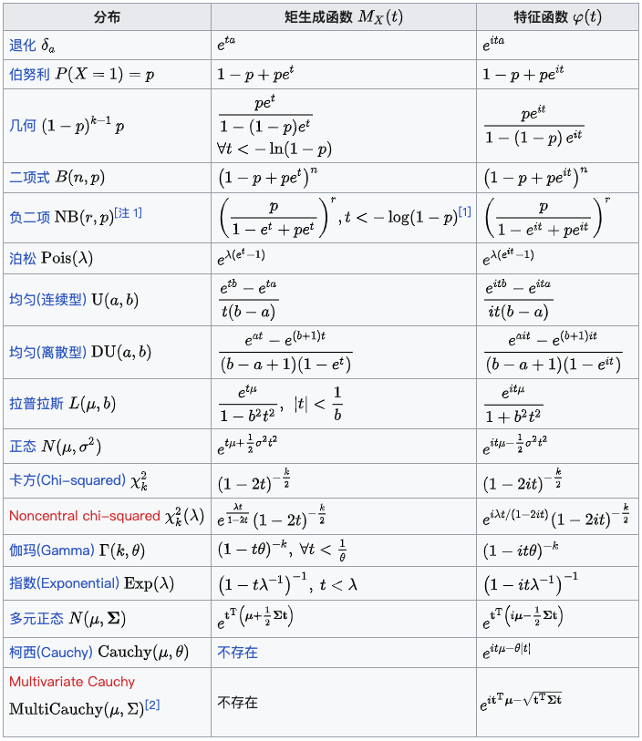

矩母函数与特征函数
矩母函数
矩母函数的定义
设 \(X\) 为一个随机变量，其矩母函数（Moment-Generating Function, MGF）定义为： \[ M_X(t)=\mathbb E[e^{tX}]=\begin{cases} \displaystyle\sum_xe^{tx}p_{\small X}(x)&\text{discrete}\\ \displaystyle\int_{-\infty}^{\infty}e^{tx}f_{\small X}(x)\mathrm dx&\text{continuous} \end{cases} \] 前提是该期望存在。
可以看到，在连续随机变量情形下，\(M_X(-t)\) 是概率密度函数 \(f_X(x)\) 的双边拉普拉斯变换。
用矩母函数生成矩
矩母函数可以用于生成矩。具体而言，矩母函数在 \(t=0\) 处的 \(n\) 阶导数就是 \(X\) 的 \(n\) 阶矩： \[ M_X^{(n)}(t)=\frac{\mathrm d^n}{\mathrm dt^n}\mathbb E[e^{tX}]=\mathbb E\left[\frac{\mathrm d^n}{\mathrm dt^n}e^{tX}\right]=\mathbb E[X^ne^{tX}]\implies M_X^{(n)}(0)=\mathbb E[X^n] \] 例如： \[ M_X(0)=1,\quad M_X'(0)=\mathbb E[X],\quad M_X''(0)=\mathbb E[X^2] \] 也可以从泰勒展开的角度理解这一性质： \[ M_X(t)=\mathbb E[e^{tX}]=\mathbb E\left[1+tX+\frac{t^2X^2}{2!}+\frac{t^3X^3}{3!}+\cdots\right]=1+tm_1+\frac{t^2}{2!}m_2+\frac{t^3}{3!}m_3+\cdots \] 其中，\(m_k\) 表示 \(X\) 的 \(k\) 阶矩。
独立随机变量的和
矩母函数在确定独立随机变量的和的统计量的情形下非常方便。
设 \(X,Y\) 是相互独立的随机变量，矩母函数分别为 \(M_X(t),M_Y(t)\)，设 \(Z=X+Y\)，则： \[ M_Z(t)=\mathbb E[e^{tZ}]=\mathbb E[e^{t(X+Y)}]=\mathbb E[e^{tX}e^{tY}]=\mathbb E[e^{tX}]\mathbb E[e^{tY}]=M_X(t)M_Y(t) \] 也就是说，两个独立随机变量相加，对应于二者的矩母函数相乘。我们知道独立随机变量之和的概率密度是二者的卷积，但卷积计算起来很麻烦，如果我们只需要结果的统计量（数字特征）而不需要具体的概率分布，用矩母函数就方便很多。
进一步地，对于 \(n\) 个相互独立的随机变量 \(X_1,X_2,\ldots,X_n\)，设 \(Y=X_1+X_2+\cdots+X_n\)，则有： \[ M_Y(t)=M_{X_1}(t)M_{X_2}(t)\cdots M_{X_n}(t) \]
矩母函数的其他性质
设随机变量 \(X\) 的矩母函数为 \(M_X(t)\)，则：
- 设 \(Z=aX\)，其中 \(a\) 为常数，则 \(M_Z(t)=\mathbb E[e^{tZ}]=\mathbb E[e^{taX}]=M_X(at)\).
- 设 \(Z=X+b\)，其中 \(b\) 为常数，则 \(M_Z(t)=\mathbb E[e^{t(X+b)}]=e^{bt}M_X(t)\).
矩母函数的例子
二项分布：设 \(X\sim B(n,p)\)，则： \[ M_X(t)=\mathbb E[e^{tX}]=\sum_{k=0}^ne^{tk}\binom{n}{k}p^k(1-p)^{n-k}=\sum_{k=0}^n\binom{n}{k}{(pe^t)}^k(1-p)^{n-k}=(pe^t+1-p)^n \] 二项分布的和：设 \(X_1\sim B(n_1,p),\,X_2\sim B(n_2,p)\)，则： \[ M_{X_1+X_2}(t)=M_{X_1}(t)M_{X_2}(t)=(pe^t+1-p)^{n_1}(pe^t+1-p)^{n_2}=(pe^t+1-p)^{n_1+n_2} \] 因此 \(X_1+X_2\sim B(n_1+n_2,p)\).
泊松分布：设 \(X\sim \text{Poisson}(\lambda)\)，则： \[ M_X(t)=\mathbb E[e^{tX}]=\sum_{k=0}^\infty e^{tk}\frac{\lambda ^k}{k!}e^{-\lambda}=e^{-\lambda}\sum_{k=0}^\infty\frac{(\lambda e^t)^k}{k!}=e^{-\lambda}e^{\lambda e^t}=\exp[\lambda(e^t-1)] \] 泊松分布的和：设 \(X_1\sim \text{Poisson}(\lambda_1),\,X_2\sim \text{Poisson}(\lambda_2)\)，则： \[ M_{X_1+X_2}(t)=M_{X_1}(t)M_{X_2}(t)=\exp[\lambda_1(e^t-1)]\exp[\lambda_2(e^t-1)]=\exp[(\lambda_1+\lambda_2)(e^t-1)] \] 因此 \(X_1+X_2\sim\text{Poisson}(\lambda_1+\lambda_2)\).
标准正态分布：设 \(X\sim N(0,1)\)，则： \[ M_X(t)=\mathbb E[e^{tX}]=\int_{-\infty}^{\infty}e^{tx}\frac{1}{\sqrt{2\pi}}e^{-x^2/2}\mathrm dx=\frac{1}{\sqrt{2\pi}}\int_{-\infty}^{\infty}e^{-\frac{(x-t)^2}{2}+\frac{t^2}{2}}\mathrm dx=e^{t^2/2} \] 正态分布：设 \(X\sim N(\mu,\sigma^2)\)，则： \[ \begin{align}M_X(t)&=\mathbb E[e^{tX}]\\&=\frac{1}{\sqrt{2\pi}\sigma}\int_{-\infty}^{+\infty}e^{tx}e^{-{(x-\mu)^2}/{2\sigma^2}}\mathrm dx\\&=\frac{1}{\sqrt{2\pi}}\int_{-\infty}^{+\infty}e^{t(\sigma s+\mu)}e^{-{s^2}/{2}}\mathrm ds&&s=(x-\mu)/\sigma\\&=\frac{e^{t\mu}}{\sqrt{2\pi}}\int_{-\infty}^{+\infty}e^{t^2\sigma^2/2}e^{-{(s-t\sigma)^2}/{2}}\mathrm ds\\&=e^{\mu t+\sigma^2t^2/2}\end{align} \] 指数分布：设 \(X\sim\text{Exp}(\lambda)\)，则： \[ M_X(t)=\mathbb E[e^{tX}]=\int_0^{\infty}e^{tx}\lambda e^{-\lambda x}\mathrm dx=\lambda\int_0^{\infty}e^{-(\lambda-t)x}\mathrm dx=\frac{\lambda}{\lambda-t}\quad(t<\lambda) \]
特征函数
复随机变量
设 \(X,Y\) 均为实值随机变量，称 \(\xi=X+iY\) 为一复随机变量，且定义其期望为 \(\mathbb E\xi=\mathbb EX+i\mathbb EY\).
特别地，对于复随机变量 \(e^{itX}\)，有： \[ \mathbb E[e^{itX}]=\mathbb E[\cos(tX)+i\sin(tX)]=\mathbb E[\cos(tX)]+i\mathbb E[\sin(tX)] \]
特征函数的定义
设 \(X\) 是一个随机变量，其特征函数（Characteristic Function）定义为： \[ \varphi_X(t)=\mathbb E[e^{itX}]=\int_{-\infty}^{\infty}e^{itx}\mathrm dF_{\small X}(x) \] 当概率密度函数 \(f_{\small X}(x)\) 存在时，有： \[ \varphi_X(t)=\mathbb E[e^{itX}]=\int_{-\infty}^{\infty}e^{itx}f_{\small X}(x)\mathrm dx \]
与矩母函数不同的是，特征函数总是存在的。
特征函数可以视为 \(iX\) 的矩母函数，或 \(X\) 在虚数轴上求得的矩母函数，即： \[ \varphi_X(t)=M_{iX}(t)=M_X(it) \] 另外可以看到，在连续随机变量情形下，特征函数 \(\varphi(t)\) 是概率密度函数 \(f_X(x)\) 的（共轭）傅立叶变换。
多元特征函数的定义
若 \(X=(X_1,X_2,\ldots,X_n)^T\) 是一个 \(n\) 元随机向量，则其特征函数定义为： \[ \varphi_X(t)=\mathbb E[e^{it^TX}]=\int_x e^{it^Tx}\mathrm dF_{\small X}(x)=\int_x e^{i(t_1x_1+t_2x_2+\cdots+t_nx_n)}\mathrm dF_{\small X}(x_1,x_2,\ldots,x_n) \] 其中 \(t=(t_1,t_2,\ldots,t_n)^T\).
特征函数的性质
特征函数有很多与矩母函数类似的性质。
\(|\varphi_X(t)|\leq\varphi_X(0)=1\)，并且 \(\varphi_X(-t)=\overline{\varphi_X(t)}\)；
\(\varphi_X(t)\) 在 \((-\infty,+\infty)\) 上一致连续；
若 \(\mathbb E[X^k]\) 存在，则 \(\varphi_X^{(k)}(t)=i^k\mathbb E[X^ke^{itX}]\)，特别有 \(\varphi_X^{(k)}(0)=i^k\mathbb E[X^k]\)；
\(\varphi_X(t)\) 是非负定的，即对于任意正整数 \(n\) 和任意实数 \(t_1,t_2,\ldots,t_n\) 与复数 \(\lambda_1,\lambda_2,\ldots,\lambda_n\)，都有： \[ \sum_{k=1}^n\sum_{j=1}^n\varphi_X(t_k-t_j)\lambda_k\overline{\lambda_j}\geq0 \]
设 \(X_1,X_2,\ldots,X_n\) 相互独立，\(Y=X_1+X_2+\cdots+X_n\)，则： \[ \varphi_{\small Y}(t)=\varphi_{\small X_1}(t)\varphi_{\small X_2}(t)\cdots\varphi_{\small X_n}(t) \]
反演定理。设随机变量 \(X\) 的分布函数为 \(F_X(x)\)，特征函数为 \(\varphi_X(t)\)，设 \(x<y\) 是分布函数的连续点，则： \[ F_X(y)-F_X(x)=\lim_{T\to\infty}\frac{1}{2\pi}\int_{-T}^{T}\frac{e^{-itx}-e^{-ity}}{it}\varphi_X(t)\mathrm dt \] 特别地，如果 \(X\) 为连续型随机变量，密度函数为 \(f_X(x)\)，则： \[ f_X(x)=\frac{1}{2\pi}\int_{-\infty}^{\infty}\varphi_X(t)e^{-itx}\mathrm dt \]
唯一性定理。若两个随机变量有着相同的特征函数，则他们的概率分布也相同，即 \(F_X(x)\) 到 \(\varphi(t)\) 的变换是一一对应的。
设有随机变量序列 \(\{X_n,n\geq 1\}\)，其分布函数序列和特征函数序列分别为 \(\{F_n(x),n\geq1\},\,\{\varphi_n(t),n\geq 1\}\)，则： \[ X_n\xrightarrow{d}X\implies \varphi_n(t)\to\varphi(t) \]
特征函数的例子
常见分布的矩母函数和特征函数如下表所示（截图自维基百科）：
